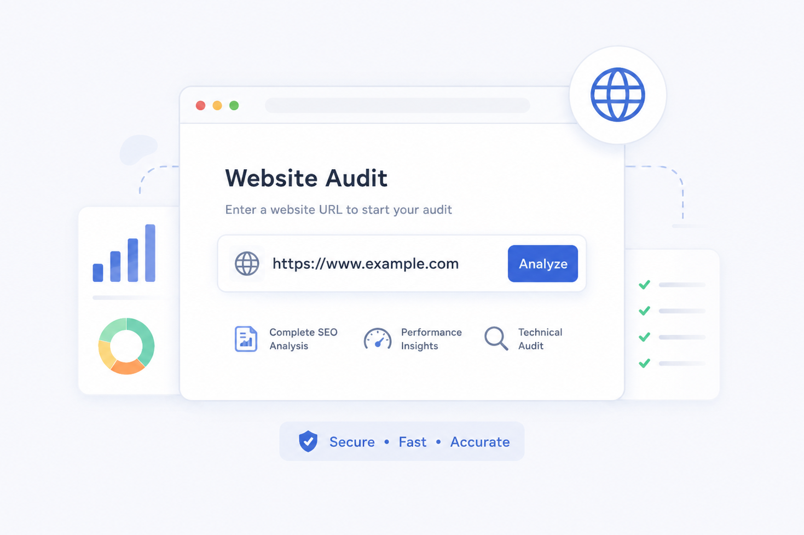
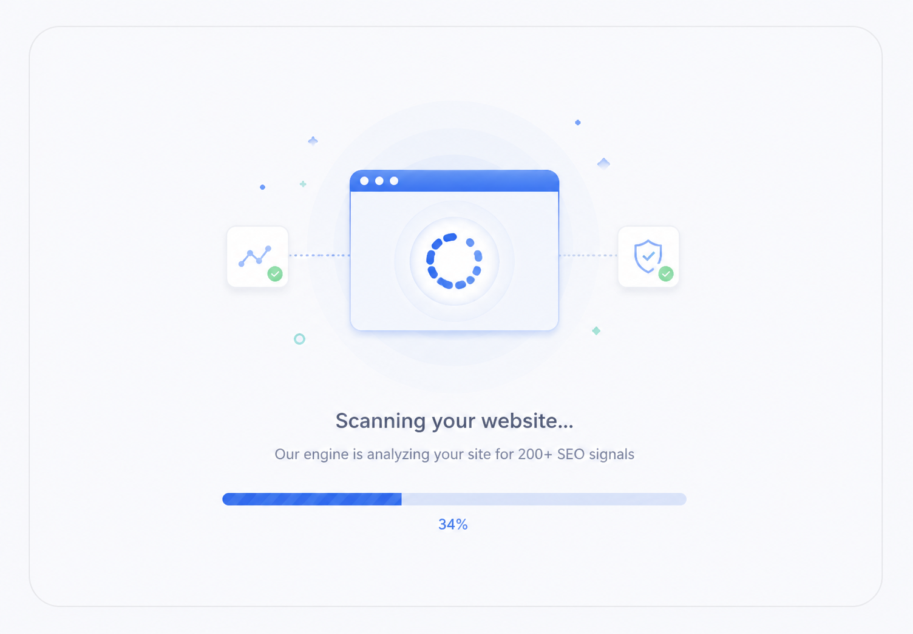

Run a full website SEO audit in minutes uncover technical errors, on-page gaps, speed issues, and missed ranking opportunities. No signup required. Instant results.
Enter any URL below and get a comprehensive SEO report covering over 200 ranking signals absolutely free.
Our audit engine analyses your site across six critical SEO dimensions — giving you a full picture of where you stand and exactly what to fix.
The foundation of every high-ranking website. We scan for crawlability issues, indexation problems, and structural errors that block search engines.
Content and structure signals that tell Google what your pages are about and how relevant they are to your target queries.
Google uses page experience signals as a direct ranking factor. Slow pages lose rankings and visitors — we flag every millisecond you're losing.
Your off-page authority is a major ranking signal. We surface the quality, volume, and risk level of your backlink profile.
With mobile-first indexing, Google primarily uses your mobile version to rank your site. We surface every mobile experience issue.
Schema markup helps AI engines and Google understand your content — unlocking rich results and AI citations your competitors may be missing.
Three simple steps to get a full SEO health report for any website — no technical knowledge required.
Type or paste your full website address into the audit tool above. You can audit any public website your own, a competitor's, or a client's. The tool supports any domain extension (.com, .co, .io, .in, etc.).
For the most complete audit, use your homepage URL. You can also audit individual pages like service pages, blog posts, or landing pages to get page-level insights.

Once you click "Run Audit", our engine crawls your website and checks over 200 SEO signals in real time including technical health, on-page factors, page speed, mobile usability, structured data, and backlink strength.
The scan typically completes in 15–45 seconds depending on your website's size and server response time. You'll see a live progress indicator while results are being gathered.

Your full SEO audit report is displayed instantly broken down by category with a clear score, priority issues highlighted in red, and quick wins marked in amber. Every issue includes an explanation and a recommended fix.
Download your report as a PDF or share it directly with your development team. For a deeper expert analysis with a 90-day action plan, request a professional review below.
The most damaging SEO issues slow server response times, broken internal links, missing canonical tags, duplicate content — are completely invisible to your visitors. But search engine crawlers see every one of them, and they penalise you for each one they find.
The average website has 47 fixable SEO issues sitting undetected. Each one quietly suppresses your rankings, limits your crawl budget, and sends traffic that should be yours to a competitor who fixed their site six months ago.
A regular SEO audit is not just maintenance — it's a competitive intelligence exercise. You learn exactly where you stand, what your competitors have fixed, and what your best ranking opportunities are right now.
Your overall audit score is a composite of all six SEO dimensions. Here's how to interpret each score band and what action it requires.
Our tool runs a multi-stage analysis pipeline on every URL — replicating what Googlebot sees when it crawls your site.
Our SEO experts will review your audit results, identify the highest-impact fixes, and deliver a written priority plan with specific recommendations tailored to your business and target market.
We'll review your site and deliver a written expert SEO analysis — including a priority fix list and 90-day action plan — within 48 hours.